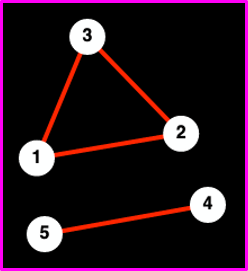
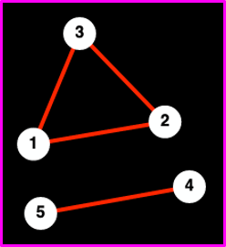

Topics in Mathematical Biology
Lecture 5
Jonathan Crofts
Nottingham Trent University
Topics in Mathematical Biology L5
- Small-world networks
- Spectral properties of networks
- The Perron-Frobenius theorem
Small-world networks
One of the most popular concepts to date in network science is that of the small-world network, i.e. a network that simultaneously shares the two properties
A small characteristic path-length
\[ \color{red}{\boxed{\color{white}{ \langle l\rangle \propto \log{n} }}} \]Here $n = |V|$ is the order of the network
- A 'large' clustering coefficient
Before looking in more detail at the mathematics behind such networks let us consider an important social experiment ran in the 1960s
Milgram's experiment
In 1967 Stanley Milgram, a social psychologist, ran a now famous experiment. He posed the following question: How many intermediate links separate two randomly selected individuals in a society?

The Experiment
- Random people were selected in Omaha, Nebraska
- They had to forward a package to named individuals in Boston following two simple rules
- If you know the target by name forward immediatley
- Otherwise, mail the package + instructions to a person you know by name who is more likely to know the target
Milgram’s experiment can be considered as finding the characteristic path-length in the network of acquaintances, or rather, the appropriate subnetwork that includes only those acquaintances that are likely to be able to help the package reach its goal.
On average it took 6 steps for the packages to reach their target coining the famed 6 degrees of separation (Kevin Bacon game etc.)
Watts-Strogatz small-world model
The idea behind the Watts-Strogatz model is a simple one: real-world networks are neither lattice-like nor random but lie somewhere in-between.
To model this hybrid-like structure, WS started off with a lattice graph (LHS figure) and added `short-cuts' by rewiring existing edges with some probability $p$.
- For small $p$ only a few edges are rewired meaning that the lattice structure is preserved, whilst the addition of the short-cuts greatly reduces the average path-length
- Alongside the RHS figure, that a range of $p$ values exist for which the network is small-world, i.e. it has large clustering and a small average path-length
Examples of biological networks that are small-world include
- Cortical networks
- Metabolic networks
- Protein-protein interaction networks
- Gene regulatory networks
Topics in Mathematical Biology L5
- Small-world networks
- Spectral properties of networks
- The Perron-Frobenius theorem
Spectral properties of networks
Next, we consider the so-called Perron-Frobenious theorem
Firstly, let us remind ourselves of some important linear algebra results:
Recall that solutions of the characteristic polynomial
\[ \chi_A(t) = (t-\lambda_1)^{n_1}(t-\lambda_2)^{n_2}\ldots (t-\lambda_k)^{n_k} \]give the eigenvalues denoted $\lambda_1, \ldots, \lambda_n$
- In the above the $n_1, n_2, \ldots, n_k$ give the algebraic multiplicities of the eigenvalues
Note: the set of eigenvalues is called the spectrum and is denoted mathematically as $\sigma(A)$
Definition 5.1
A square matrix with non-negative entries (i.e. $\displaystyle a_{ij}\geq 0$) is called irreducible if for all pairs of indices $(i,j)$ there exists a positive integer $k(i,j)$ such that $\left(A^k\right)_{ij}>0$
Note
- Recall that $\left(A^k\right)_{ij}$ counts the number of walks of length $k$ between nodes $i, j$
- It follows that a network is (strongly) connected iff it is irreducible
- If $A$ is reducible then it can be permuted (nodes relabelled) into block diagonal form i.e. \[ A = \begin{pmatrix} B_1 &&&\\&B_2&&\\&&\ddots&\\&&&B_k \end{pmatrix} \]
Each block represents a component
Example 5.1
Let $N$ be the network shown below
 

Block structure not evident
Block structure evident after relabelling nodes
Example 5.2
A more realistic example highlights the difficulty of observing network structure in real-world data
Random labelling of nodes
Relabelling of nodes reveals structure
Topics in Mathematical Biology L5
- Small-world networks
- Spectral properties of networks
- The Perron-Frobenius theorem
Theorem 5.1 (Perron-Frobenius)
Let $A\in\mathbb{R}^{n\times n}$ be non-negative and irreducible. Then
- $A$ has a real positive eigenvalue $\lambda_1$ such that all other eigenvalues $\lambda_i$ for $i=2,\ldots, n$ satisfy $\lambda_1>|\lambda_i|$
- The eigenvalue $\lambda_1$ has algebraic multiplicity 1 and has an eigenvector $\mathbf{x}$ with all positive entries
Remarks
- The eigenvalue $\lambda_1$ is often referred to as the Perron-Frobenius eigenvalue
- It follows that if $A$ is the adjacency matrix of a network consisting of a single strongly connected component then
- $A$ has spectral radius $\rho(A)=\lambda_1$
- The corresponding eigenvector has all positive entries
Example 5.3
Suppose $N=(V, E)$ is a $k$-regular network then
\[ \mathbf{x} = \begin{pmatrix}1,&1,&\ldots,&1\end{pmatrix}^T \]is an eigenvector corresponding to the eigenvalue $\lambda=k$ and since \[ |\lambda|\leq\Delta(N) \]
where $\Delta(N)$ denotes the maximum degree of the network ($k$ here)
To see this, suppose $x_j$ is the maximum entry of the eigenvector, then
\[ |\lambda_j x_j| = |\lambda_j||x_j| = |(Ax)_j|=\left|\sum a_{jk}x_k\right|\leq k_j|x_j|\leq\Delta(N)|x_j| \]It follows that the Perron-Frobeius eigenvalue for a regular network is given by \[ \lambda_1 = k \]
Lecture 5 Review
- In this lecture we covered
- Small-world networks
- Spectral properties of networks
- Perron-Frobenius theorem
- After this lecture you should
- be aware of the small-world model of Watts and Strogatz and know how to check when a real-world network has this property
- be able to use spectral techniques to analyse the structure of a network